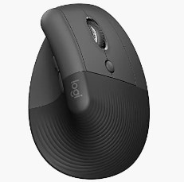
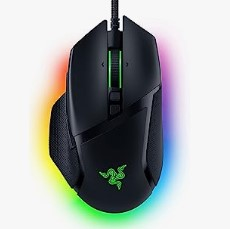
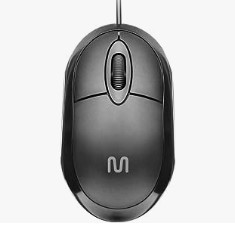

| Mouses | Marca | Código | Descrição | Qnt Estoque | Conectividade | Valor Unitário | |
|---|---|---|---|---|---|---|---|
|  | Logitech | 1 | Mouse Sem Fio, Lift Vertical com Design Ergonômico para Redução de Tensão Muscular, Cliques Silenciosos | 77 | Conexão Bluetooth ou USB Logi Bolt | R$379,90 | |
|  | Razer | 2 | Mouse gamer ergonômico e personalizável Razer Basilisk V3, iluminação Chroma RGB, sensor óptico de 26K DPI, Classic Black | 9 | USB | R$336,90 | |
|  | Multilaser | 3 | Mouse Classic Box Óptico USB 1200dpi | 2 | USB | R$23,57 |